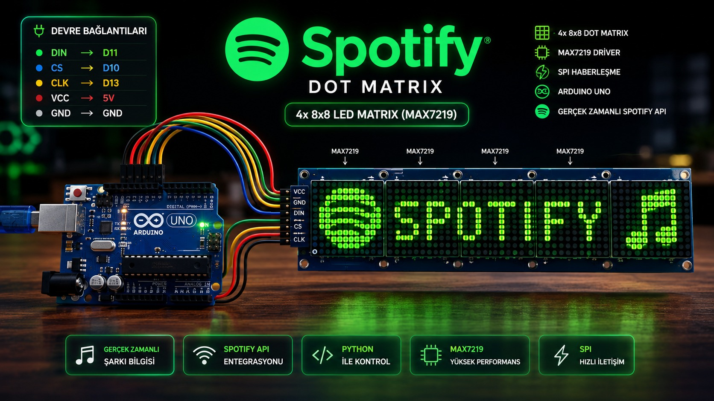
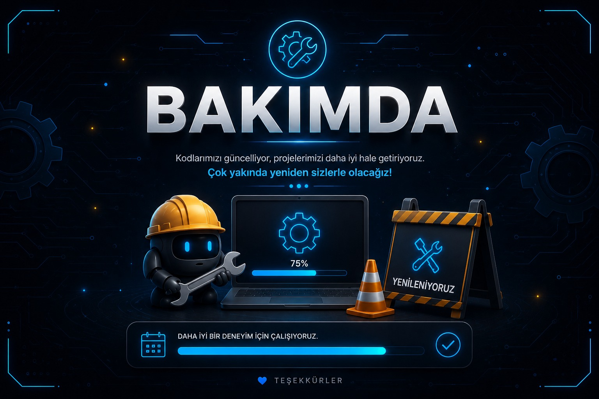
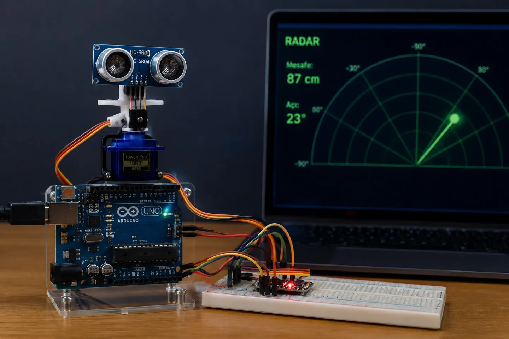
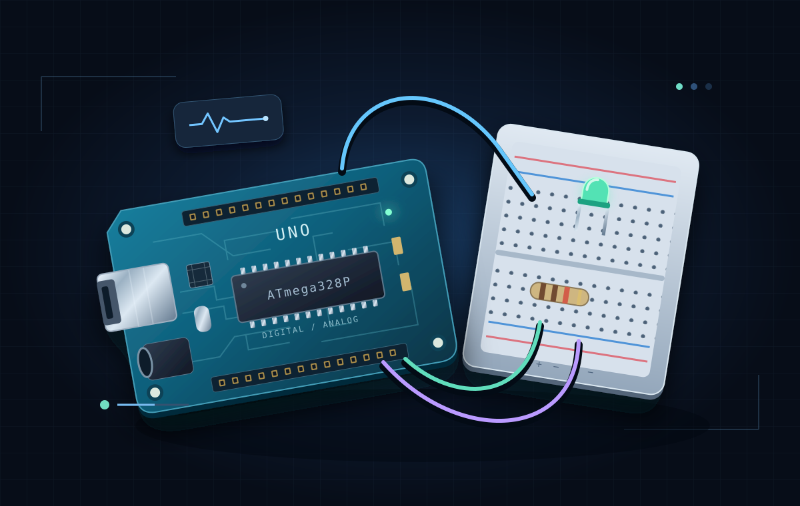
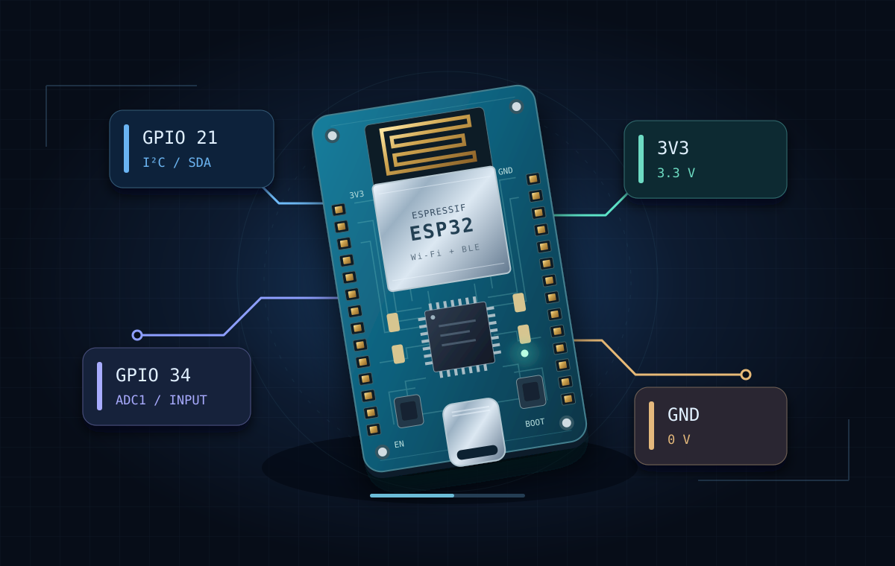

Spotify Dot Matrix
Spotify'da çalan şarkıları Arduino Uno ve MAX7219 Dot Matrix ekranında gerçek zamanlı gösteren sistem.
Projeyi incele ◉ Etkileşimli demo mevcutESP32, Arduino ve gömülü sistemler üzerine geliştirdiğim projeleri, yazılım çalışmalarımı ve teknik deneyimlerimi paylaşıyorum.
Instagram@00.e.ge00Projeler, site araçları, teknoloji veya Burdur’un hava durumu. Birlikte keşfedelim.
Bir soru seç veya yaz.
Soruların yanıt için Cloudflare’a iletilir. Kişisel veya gizli bilgi paylaşma. Yapay zekâ yanıtları hata içerebilir.
Görsel bir 3D canlandırmadır; fiziksel kart bağlantısı içermez.
Gerçek donanımlar, çalışan kodlar ve yeni fikirler. Son çalışmalarımı buradan inceleyebilirsin.

Spotify'da çalan şarkıları Arduino Uno ve MAX7219 Dot Matrix ekranında gerçek zamanlı gösteren sistem.
Projeyi incele ◉ Etkileşimli demo mevcutHC-SR04 ultrasonik sensör ve SG90 servo motorla geliştirilen gerçek zamanlı radar simülasyonu.
Projeyi incele ◉ Etkileşimli demo mevcutYeni çalışmamı tamamladığımda bu bölümde paylaşacağım.
03 / YAKINDA
Bilgisayardaki parça bilgisini seri haberleşmeyle Arduino'ya ileten Dot Matrix çalışmasını, bağlantı şeması ve metin simülatörüyle birlikte incele.
Dot Matrix projesini keşfet
02 / HC-SR04 × SG90Bir servo motorun çevirdiği ultrasonik sensörle açıya bağlı mesafe ölçümü. Radar simülasyonunu dene ve kullanılan malzemeleri incele.
Servo Radar'ı keşfetProjelerin arkasındaki elektroniği keşfet. Sanal devre kur, bağlantıları doğrula veya ESP32 pinlerinin görevlerini incele.

LED, buton ve HC-SR04 bağlantılarını seç. Hataları kontrol et, örnek çıkışları çalıştır.
Laboratuvara gir ↗
30 pinli ESP32 kartını keşfet. ADC, PWM, I²C ve başlangıç pinlerini filtrele.
Pin haritasını aç ↗Direnç renkleri, Ohm Kanunu, gerilim bölücü, LED direnci ve pil süresi. Beş araç, tek yerde.
Elektronik ve yazılımı, bir fikri çalışan bir sisteme dönüştürmenin iki tamamlayıcı parçası olarak görüyorum. ESP32 ve Arduino tabanlı projelerimde sensör verilerini okumaya, donanımla haberleşmeye ve anlaşılır kullanıcı arayüzleri oluşturmaya odaklanıyorum.
Çalışmalarımda devre bağlantılarından mikrodenetleyici koduna, seri haberleşmeden web arayüzüne kadar sürecin farklı katmanlarını birlikte ele alıyorum. Spotify Dot Matrix ve Servo Radar gibi projeler üzerinden veriyi görünür ve etkileşimli hale getiren uygulamalar geliştiriyorum.
Geliştirme yaklaşımım; küçük bir prototiple başlamak, bağlantıları ve kodu adım adım doğrulamak, ardından sonucu anlaşılır biçimde belgelemek üzerine kurulu. Bağlantı şemalarını, malzeme listelerini ve kaynak kodlarını paylaşarak projelerin incelenebilir ve yeniden üretilebilir olmasını önemsiyorum.
Bu portfolyo, tamamlanan projelerimin yanında öğrenme ve geliştirme sürecimin de bir kaydı. Elektronik, gömülü sistemler ve web teknolojileri üzerine yeni fikirler deniyor; teknik sorulara ve birlikte geliştirme fırsatlarına açık bir alan oluşturuyorum.
Birlikte bir şey geliştirelimProjelerimi geliştirirken kullandığım platformlar, diller ve teknolojiler.
Donanım, sensörler ve mikrodenetleyici tabanlı uygulamalar.
Web arayüzleri ve farklı uygulamalar için yazılım geliştirme.
Veri aktarımı, bağlantılı cihazlar ve IoT sistemleri.
Kod arşivimi düzenliyorum. Yeni proje dosyaları hazır olduğunda bu bölümde yayımlayacağım.
Arduino, Python ve Processing örneklerini ilgili proje sayfalarından görüntüleyebilir, kopyalayabilir ve indirebilirsin.
Bir proje, teknik soru veya iş birliği için aşağıdaki formdan bana mesaj gönderebilirsin.